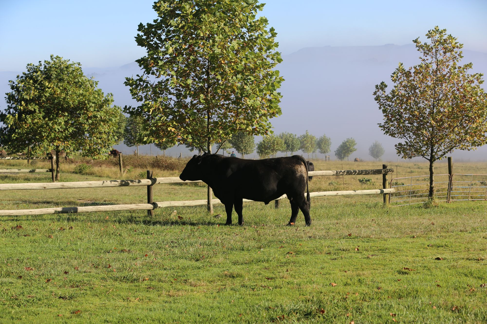
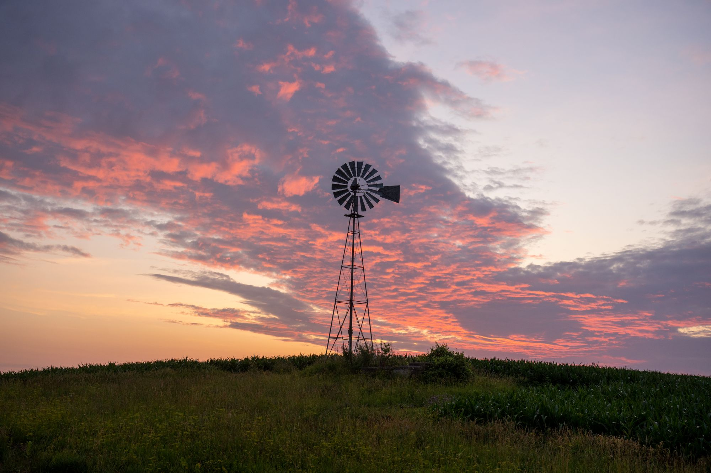

The Ranch
We run Black Angus on pasture in Argyle, in the Eastern Cross Timbers of Denton County, Texas.
Why we sell it this way.
Most of the beef in America moves through a system that is very good at producing meat cheaply and very bad at telling you anything about it. By the time a package reaches a shelf, the animal behind it is unrecoverable — not hidden, just gone.
Selling shares runs it backwards. The animal comes first and the customer comes second, so there is one specific cow, standing in one specific pasture, with your name attached to it before anything else happens. You can ask how it is doing. You can come and look. When the beef arrives you already know the answer to every question you would otherwise have to take on trust.
It is more work for us than selling by the pound would be, and it asks more of you. That trade is the whole point.

Where this is.
Argyle sits in the Eastern Cross Timbers, the band of post oak and blackjack oak that runs down the middle of North Texas. Sandy soil, hills, and trees — not the flat blackland prairie people picture when they hear Texas.
-
The ground
Sandy, slightly acidic soils over Woodbine sand, with post oak and blackjack oak on the ridges and bottomland between them. The Town of Argyle's own comprehensive plan describes the place as higher ridgelines alternating with low-lying floodplain. Texas A&M Forest Service calls the Eastern Cross Timbers perhaps the most fragmented vegetative region in Texas, which is a polite way of saying the metroplex is eating it.
-
The weather
About 38 inches of rain a year, arriving mostly in two humps — May and October — with a dry stretch in between. Roughly 226 frost-free days. January runs about 56°F by day and 34°F at night; July runs about 96°F and 75°F. The summers are the hard part, not the winters.
-
The grass
Bermudagrass carries the summer here and is most productive from June through August. Cool-season annuals — rye does best on this sandy ground, often mixed with ryegrass — are overseeded in early autumn to stretch the grazing. There is still a gap, which is why hay gets fed from roughly late November into March. Anyone who tells you cattle in North Texas eat nothing but standing grass twelve months a year is selling something.
-
The neighbours
Denton County had 2,936 farms at the 2022 Census of Agriculture and 28,204 head of cattle. Hay and forage is the single largest crop at 39,482 acres. Eighty-one percent of the farms here are under fifty acres, and 7% sell directly to the people who eat the food — more than double the Texas rate.
24%of Denton County's farmland, gone in five years
The argument we actually believe.
Between the 2017 and 2022 agricultural censuses, Denton County lost roughly a quarter of its land in farms — from around 360,000 acres down to 272,184. The average farm shrank from 110 acres to 93. This is one of the fastest-growing counties in the United States and the arithmetic is not complicated.
We are not going to claim that buying a share here fixes the climate. The research on grazing and carbon is genuinely contested and anyone quoting you a tidy number is quoting one study and ignoring another.
What is not contested is simpler. Land that pays for itself as farmland tends to stay farmland. That is the honest version of the environmental case, and it is the one we will make.
What we will and will not say about the beef.
There is a lot of language in this business that sounds regulated and is not. Here is where we stand.
-
Raised on pasture
True, and we will say it. Our cattle live on grass. In winter they eat hay, because this is North Texas and the grass stops.
-
“Certified grass-fed”
We will not say it, because no such USDA certification exists. The Agricultural Marketing Service withdrew its grass-fed marketing standard in January 2016. Any business putting “USDA certified grass-fed” on a page is describing a certification that was discontinued ten years ago.
-
“Certified Angus Beef”
We will not say it. Certified Angus Beef is a registered brand owned by the American Angus Association, applied to carcasses at licensed packing plants against ten specifications. Fewer than four in ten Angus cattle meet them. Our cattle are Angus; our beef is not CAB, and we are not licensed to call it that.
-
“Healthier than store beef”
We will not say it. Beef raised on forage has a different fat profile. Whether that makes a measurable difference to a person eating normal quantities is not settled, and the authors of the research most often cited for it say so themselves. Different, not medicine.
-
Traceable
True, and it is the claim that needs no study behind it. You will know the animal, the tag, the pasture and the date. That is the entire product.
Come see it.
A drive out here will tell you more in twenty minutes than this page will. Weekends work best, and around feeding time is when there is most to see.
